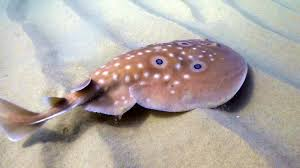
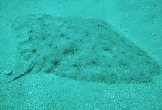
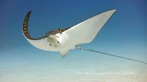

Introducción
Los rayiformes son un tipo de pez cartilaginoso, muy emparentado con los tiburones. Sin embargo, su apariencia es bastante diferente debido a una adaptación evolutiva muy interesante.
¿Qué los caracteriza?
- Cuerpo aplanado: A diferencia de los tiburones, las rayas tienen un cuerpo aplanado dorsoventralmente, lo que significa que son más "planas" que "redondas". Esta forma les permite camuflarse en el fondo marino y sorprender a sus presas.
- Aletas pectorales unidas: Sus aletas pectorales están unidas al cuerpo, formando una especie de "disco". Es gracias a estas aletas que pueden nadar de manera ondulatoria, como si estuvieran volando bajo el agua.
- Branquias ventrales: Las branquias, que son los órganos que utilizan para respirar, se encuentran en la parte inferior del cuerpo, a diferencia de los tiburones que las tienen a los lados.
- Diversidad: Existen muchas especies de rayiformes, con diferentes tamaños, formas y colores. Algunas son pequeñas y discretas, mientras que otras, como las mantarrayas, pueden alcanzar tamaños impresionantes.
¿Dónde viven?
Las rayas se encuentran en casi todos los mares del mundo, desde aguas tropicales hasta aguas frías. La mayoría prefiere vivir cerca de la costa, pero algunas especies se aventuran a aguas más profundas.
¿Qué comen?
La dieta de las rayas es variada y depende de la especie. Algunas se alimentan de moluscos, crustáceos y pequeños peces, mientras que otras prefieren el plancton.
¿Son peligrosas?
La mayoría de las rayas son inofensivas para los humanos. Sin embargo, algunas especies tienen un aguijón venenoso en la cola que utilizan para defenderse. Es importante respetar su espacio y evitar molestarlas.
Especies de rayas
1. Raya Común (Raja clavata)
Tamaño: Alcanza una longitud máxima de 1 metro.
Hábitat: Vive en aguas poco profundas del Atlántico nororiental y el Mediterráneo.
Alimentación: Se alimenta de pequeños invertebrados como gusanos, moluscos y crustáceos.
Características: Cuerpo aplanado con una cola larga y fina, y una serie de espinas dorsales.
2. Manta Raya Gigante (Manta birostris)
Tamaño: Es la especie de raya más grande, puede alcanzar una envergadura de más de 7 metros.
Hábitat: Se encuentra en todos los océanos tropicales y subtropicales.
Alimentación: Se alimenta de plancton, pequeños peces y crustáceos.
Características: Cuerpo triangular con dos grandes aletas pectorales y dos pequeños cuernos cefálicos.
3. Raya Eléctrica (Torpedo marmorata)
Tamaño: Alcanza una longitud máxima de 80 centímetros.
Hábitat: Se encuentra en aguas poco profundas del Atlántico nororiental y el Mediterráneo.
Alimentación: Se alimenta de pequeños peces y crustáceos.
Características: Cuerpo aplanado con dos grandes órganos eléctricos que pueden emitir una descarga de hasta 220 voltios.
4. Raya Águila Moteada (Aetobatus narinari)
Tamaño: Alcanza una longitud máxima de 2 metros.
Hábitat: Se encuentra en aguas tropicales y subtropicales de todos los océanos.
Alimentación: Se alimenta de pequeños peces, moluscos y crustáceos.
Características: Cuerpo aplanado con una larga cola con un aguijón venenoso.
5. Raya Mariposa (Gymnura altavela)
Tamaño: Alcanza una longitud máxima de 2 metros.
Hábitat: Se encuentra en aguas tropicales y subtropicales de todos los océanos.
Alimentación: Se alimenta de pequeños peces, moluscos y crustáceos.
Características: Cuerpo aplanado con dos grandes aletas pectorales que forman una especie de "mariposa".
6. Raya Pintada (Rhinoptera bonasus)
Tamaño: Alcanza una longitud máxima de 1 metro.
Hábitat: Se encuentra en aguas tropicales y subtropicales de todos los océanos.
Alimentación: Se alimenta de pequeños peces, moluscos y crustáceos.
Características: Cuerpo aplanado con dos grandes aletas pectorales con manchas oscuras.
7. Raya Estrellada (Asteriscus scolopax)
Tamaño: Alcanza una longitud máxima de 20 centímetros.
Hábitat: Se encuentra en aguas poco profundas del Atlántico nororiental y el Mediterráneo.
Alimentación: Se alimenta de pequeños gusanos y crustáceos.
Características: Cuerpo aplanado con un disco de forma estrellada.
8. Raya de Espina (Urolophus halleri)
Tamaño: Alcanza una longitud máxima de 50 centímetros.
Hábitat: Se encuentra en aguas poco profundas del Pacífico nororiental.
Alimentación: Se alimenta de pequeños peces y crustáceos.
Características: Cuerpo aplanado con una cola larga y fina con un aguijón venenoso.
9. Raya Moteada del Pacífico (Bathyraja interrupta)

Tamaño: Alcanza una longitud máxima de 1 metro.
Hábitat: Se encuentra en aguas profundas del Pacífico nororiental.
Alimentación: Se alimenta de pequeños peces y crustáceos.
Características: Cuerpo aplanado con una serie de espinas dorsales.
10. Raya Látigo (Taeniura lymma)
Tamaño: Alcanza una longitud máxima de 1 metro.
Hábitat: Se encuentra en aguas tropicales y subtropicales del Indo-Pacífico.
Alimentación: Se alimenta de pequeños peces y crustáceos.
Características: Cuerpo aplanado con una cola larga y fina con un aguijón venenoso.